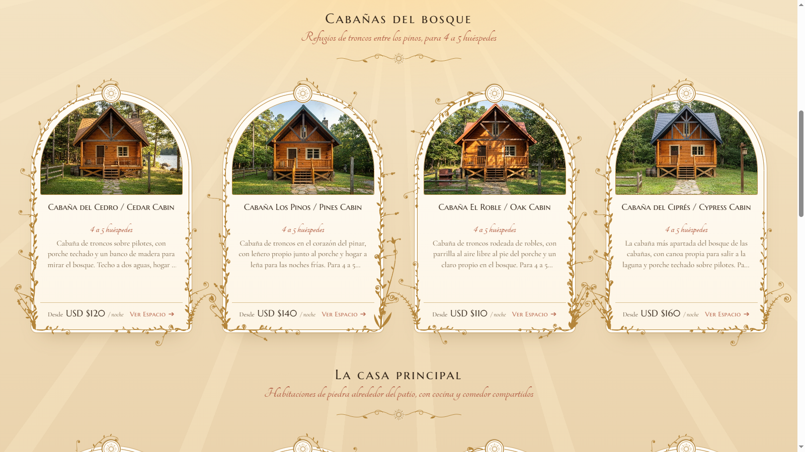
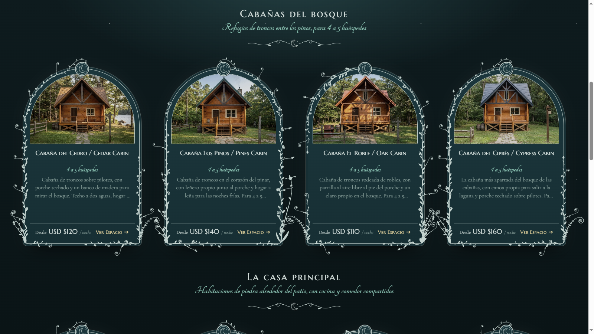
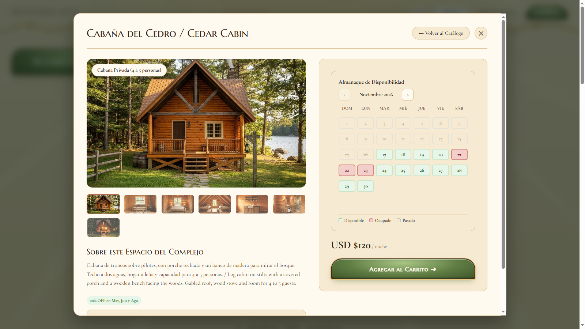
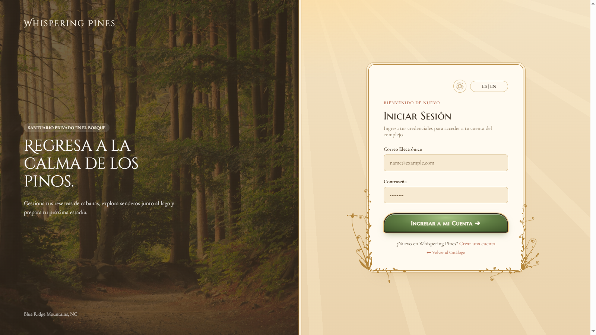
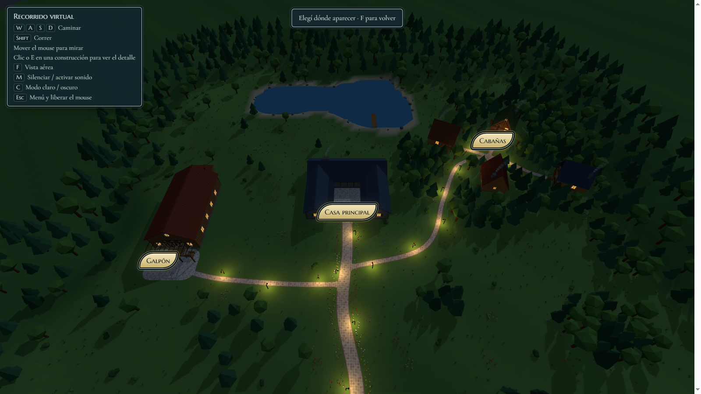

Whispering
Pines
E-commerce de reservas para un complejo de cabañas y espacios de eventos.
¿Qué es Whispering Pines?
Un complejo turístico ficticio en el bosque que vende noches de estadía y días de evento. El sitio funciona como una tienda: catálogo, detalle, carrito y checkout.
4 Cabañas
Del Cedro, Los Pinos, El Roble y del Ciprés. De 4 a 5 personas cada una.
Galpón de fiestas
Las Acacias: un granero para eventos de hasta 120 personas.
Casa principal
6 habitaciones privadas y el salón comunal con cocina, comedor y baños.
El cliente
Navega el catálogo, ve la disponibilidad en un almanaque, arma su carrito, confirma y sigue sus reservas.
El administrador
Crea y edita espacios (con fotos), cancela reservas con un motivo y gestiona las cuentas de clientes.
Dos proyectos que se hablan por HTTP
Frontend
React 19 + Vite
Redux Toolkit · React Router
axios · Three.js
localhost:5173
+ token JWT
Backend
Spring Boot 4 · Java 17
Spring Security + JWT
Spring Data JPA
localhost:8080/api
MySQL
usuarios, espacios,
carritos, reservas
Una sola página
El front es una SPA: React Router cambia la vista sin recargar el sitio.
Estado global
Sesión, carrito, reservas y espacios viven en el store de Redux.
API REST
Recursos con GET, POST, PUT, PATCH y DELETE, protegidos por rol.
Spring Boot en capas
Controller
recibe el pedido
y responde
Service
reglas del negocio
Repository
JPA: consultas
a la base
MySQL
8 controllers
Auth, Espacio, Carrito, Reserva, Usuario y tres de admin (espacios, general e imágenes).
5 services
Interfaz + implementación: Auth, Espacio, Carrito, Reserva y Usuario.
6 entidades
Usuario, Espacio, Carrito, ItemCarrito, Reserva y DetalleReserva.
DTOs
Request y Response separados: la entidad nunca sale directo por la API.
Modelo de entidades
Endpoints
Públicos
| POST | /auth/register |
| POST | /auth/login |
| GET | /espacios |
| GET | /espacios/{id} |
| GET | /espacios/{id}/fechas-ocupadas |
Cliente (con token)
| GET | /usuarios/me |
| GET | /carrito |
| POST | /carrito/items |
| DELETE | /carrito/items/{id} |
| POST | /carrito/checkout |
| GET | /reservas/mis-reservas |
| DELETE | /reservas/{id} |
| PATCH | /reservas/{id}/leer-notificacion |
Administrador
| GET POST | /admin/espacios |
| PUT DELETE | /admin/espacios/{id} |
| PATCH | /admin/espacios/{id}/restaurar |
| POST | /admin/imagenes |
| GET | /admin/reservas |
| DELETE | /admin/reservas/{id} |
| GET | /admin/usuarios |
| PUT | /admin/usuarios/{id}/rol |
| DELETE PATCH | /admin/usuarios/{id}(/restaurar) |
Todas las rutas empiezan con /api. Las bajas son lógicas (campo activo) y se pueden restaurar.
Spring Security + JWT
Login
email + contraseña
POST /auth/login
localStorage
el front guarda
el token
Bearer <token>
JwtAuthFilter
valida el token y
carga el usuario y su rol
Reglas
- Contraseñas guardadas con BCrypt.
- /api/admin/** exige el rol ROLE_ADMIN.
- Una cuenta desactivada no puede seguir usando su token: el front la verifica con /usuarios/me.
Huecos que cerramos
- El registro siempre crea clientes: el rol ya no viaja en el pedido.
- El admin recibe UsuarioResponseDTO: sin el hash de la contraseña.
- Usuario de la base y secreto del JWT en un .env fuera del repositorio.
Cómo se hace una reserva
Catálogo
Lista de espacios con precio desde.
Detalle
Fotos y almanaque con las fechas ocupadas.
Carrito
Se validan las fechas y quedan bloqueadas 10 min.
Checkout
Medio de pago y confirmación: se crea la reserva.
Mis reservas
Estado, cancelación y avisos en el buzón.
Sin superposición
No se puede agregar un espacio ocupado por una reserva o por otro carrito vigente.
Bloqueo de 10 min
Lo vencido se quita solo al leer, agregar o confirmar el carrito.
Descuentos
20 % en noches de temporada baja (mayo, junio, agosto) y 15 % por pack de 2+ espacios.
Cancelaciones
El admin cancela con un motivo y el cliente lo ve en su buzón de notificaciones.
React: vistas y componentes
Rutas (React Router)
| / · /catalogo | CatalogoView |
| /detalle | DetalleEspacioView (+ modal) |
| /login · /register | LoginView · RegisterView |
| /checkout | CheckoutView |
| /mis-reservas | MisReservasView |
| /mapa-3d | Mapa3DView |
| /admin/espacios | AdminEspaciosView |
| /admin/reservas | AdminReservasView |
| /admin/usuarios | AdminUsuariosView |
App.jsx redirige según la sesión y el rol: el admin no ve pantallas de cliente y un visitante no entra a las privadas.
src/ ├── main.jsx Provider + BrowserRouter ├── App.jsx rutas, tema, idioma ├── views/ una pantalla por ruta ├── components/ │ ├── layout/ MainLayout, barras, pie │ ├── auth/ catalogo/ detalle/ │ ├── carrito/ reservas/ admin/ │ ├── ornamentos/ dibujos del diseño │ └── ui/ CampoFormulario, LinkFundido ├── Redux/ store + 7 slices ├── i18n/textos.js español / inglés ├── utils/api.js API_URL + conToken() └── mapa3d/ recorrido virtual
Principios que seguimos
Componentes chicos
Archivos .jsx en PascalCase. Las vistas casi sin lógica; la funcionalidad en componentes.
Props y eventos
Los datos bajan por props y los eventos suben: el hijo llama a una función del padre.
Estado sin mutar
Se hace una copia y se pasa al set. En Redux Toolkit lo resuelve el reducer.
useEffect
GET al montar con []. POST, PUT y DELETE en la función del evento. Limpieza en el return.
Sin alert
Los errores se guardan en un estado y se muestran en el JSX, no con alert.
Listas con key
Todo map lleva una key con el id del elemento.
Redux Toolkit + axios
1 · Componente
dispatch(fetchEspacios())
2 · createAsyncThunk
llama al back con axios
3 · extraReducers
pending · fulfilled · rejected
4 · Store
useSelector(state => state.espacios.items)
// Redux/espaciosSlice.js export const fetchEspacios = createAsyncThunk( 'espacios/fetchEspacios', async () => { const { data } = await axios.get(URL) return data }) extraReducers: (builder) => { builder .addCase(fetchEspacios.pending, (state) => { state.loading = true }) .addCase(fetchEspacios.fulfilled, (state, action) => { state.loading = false state.items = action.payload }) .addCase(fetchEspacios.rejected, (state, action) => { state.error = action.error.message }) }
Antes y después de Redux
Antes: todo en App.jsx
- Sesión, carrito y reservas en useState de App.
- Pasaban por props de padre en hijo: el carrito llegaba a la barra atravesando 4 niveles.
- Llamadas con fetch, .then y .catch, armando headers y JSON a mano.
Después: store global
- <Provider store={store}> en main.jsx.
- Cada componente lee lo que necesita con useSelector y despacha con useDispatch.
- axios convierte el JSON solo; el token va con conToken().
- Reducers puros: el localStorage se toca en el thunk.
Lo que es de un solo componente — un campo, un mensaje de error — sigue siendo estado local.
Art Nouveau en dos temas

Vitral del Alba (claro): oro, crema y verde salvia, con soles

Luz de Luna (oscuro): plata y verde noche, con lunas
Variables CSS
Cada tema es una clase con sus colores.
Misma maqueta
Nada existe en un solo tema; mismos tamaños.
Sprite SVG
Enredaderas y marcos en ornamentos.svg.
4 tipografías
Cinzel, Marcellus, Tangerine y Cormorant.
Pantallas del cliente

Detalle: fotos, almanaque de disponibilidad y botón para agregar al carrito

Inicio de sesión

Mis reservas
Panel del administrador

Espacios
Alta, edición de precio, baja y restauración. Las fotos se suben desde la computadora.

Reservas
Todas las reservas del complejo. Se cancelan con un motivo que le llega al cliente.

Usuarios
Cambio de rol y desactivación o restauración de cuentas.
Recorrido virtual en 3D

La entrada: la página que se estaba viendo queda como póster del cartel

Vista aérea (F) con lugares para aparecer

El tema oscuro es la noche: se prenden los faroles
Cómo está hecho el recorrido
React: Mapa3DView.jsx
Estado, menú de pausa (Esc), avisos, carrito y datos de los espacios desde Redux. Monta el motor en un useEffect y lo destruye en la limpieza.
Three.js: carpeta mapa3d/
- plano.js dónde va cada cosa · relieve.js a qué altura
- escenaMapa.js construye: suelo, caminos, bosque, modelos
- motorMapa.js lo hace andar: cámara, teclas, choques, día y noche
- cielo.js y sonido.js (Web Audio, sin archivos)
Lo que tiene
- Primera persona con W A S D y mouse (Pointer Lock).
- Choques con árboles, construcciones, la laguna y la cerca.
- Clic o E en una cabaña abre su detalle para reservar.
- Viento en árboles, plantas, faroles y humo.
- Ciclo de día y noche con atardecer, sol, luna y estrellas.
- Mallas quietas juntadas por material: anda a 60 cuadros por segundo.
Experiencia de uso
Español e inglés
Todos los textos en i18n/textos.js; el idioma es un estado de App.
Transiciones
Fundido cruzado entre pantallas, temas que se funden y paneles que se deslizan.
Bienvenida y despedida
Pantallas de "Bienvenido" y "Hasta pronto" al entrar y salir.
Carrito al día
Se refresca cada 20 segundos: lo vencido desaparece solo.
Almanaque claro
Días libres, ocupados y pasados bien distintos en los dos temas.
Catálogo cómodo
Hasta 5 tarjetas por fila y desplazamiento suave a la sección de espacios.
¿Preguntas?
Ahora, la demo en vivo.